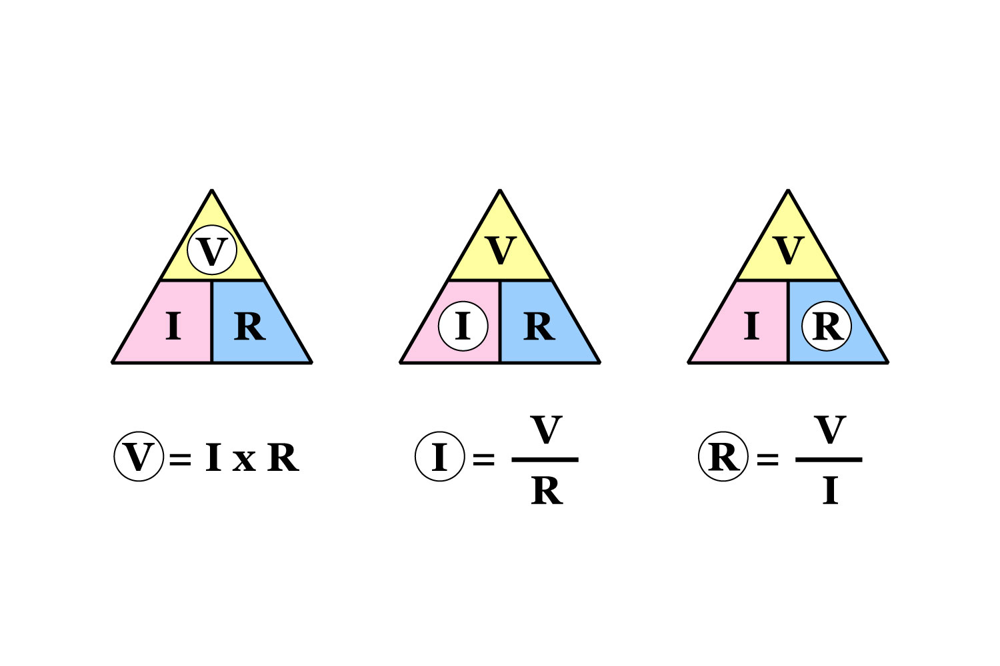
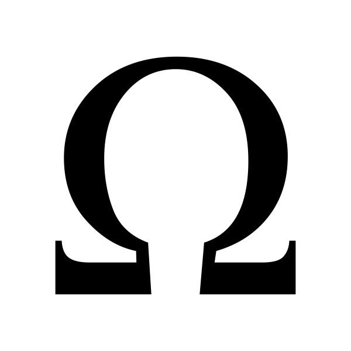

La legge di Ohm afferma che l'intensità di corrente (I) in un circuito è direttamente proporzionale alla tensione (V) applicata e inversamente proporzionale alla resistenza (R) del circuito. In termini pratici, se si aumenta la tensione mantenendo la resistenza costante, la corrente aumenta, e se si aumenta la resistenza mantenendo la tensione costante, la corrente diminuisce. La legge è valida perfettamente per i materiali detti "ohmici" (principalmente i metalli) solo se la temperatura rimane costante, poiché la resistenza della maggior parte dei materiali varia con la temperatura. I componenti che rispettano questa legge sono chiamati resistenze.
Tutto quello che si è detto prima si può riassumere nella formula matematica V=I*R, dove V è la tensione in Volt, I è la corrente in Ampere e R è la resistenza in Ohm. Poi ci sono le formule inverse che sono due:
 